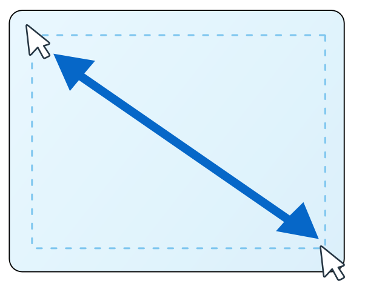
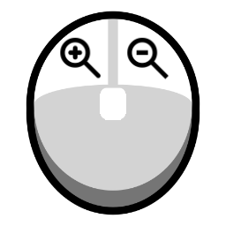
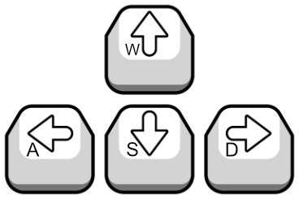

A small fractal explorer for wandering through
beautiful mathematical landscapes.
wxChaos is built for curiosity. Pick a fractal, move through it
with the mouse or keyboard, change the colors and rendering
algorithms, and let the image pull you toward the next detail.
Click Open documentation whenever a fractal catches your eye to discover its story,
its mathematics, and a few inviting experiments.
A fractal is a shape or pattern whose structure keeps appearing as you look across different
scales. Some fractals are built by repeating a geometric rule; others emerge by iterating an
equation or following a dynamical system. In each case, simple instructions accumulate into
surprising detail.
The main tools to explore fractals
Mouse tool
This is the most versatile tool.
Use the default pointer for direct fractal navigation.
Left-click + drag zooms in, right-click zooms back, and the
keyboard directional keys or middle mouse click can pan the view.
You can also use the mouse wheel to zoom in and out.
Pan tool
Drag the rendered image by hand when you want to nudge
the current view. You can also use the mouse wheel to zoom in and out.
Zoom tool
Click and drag to frame an area precisely. This is the
best way to dive into spirals, bulbs, branches, and tiny
copies hiding along the boundary.
Point info tool
Inspect a point on the canvas to see what the active
fractal knows about it. It is a nice way to connect the
picture back to the numbers underneath.
Movement hints

Click and drag.Draw a box around the region you want to explore next.

Mouse clicks.Left click + mouse drag zooms in. Right click returns to the previous
zoom level.

Keyboard movement.Use the arrow keys or WASD keys to move the viewport.
What else can wxChaos do?
Make sure to play with the renderer options. A small change in
coloring, smoothing, orbit traps, or the active algorithm can
make the same fractal feel like a completely different place.
Un pequeño explorador de fractales para recorrer
paisajes matemáticos hermosos.
wxChaos está hecho para la curiosidad. Elige un fractal, navega con
el mouse o el teclado, cambia los colores y los algoritmos de
renderizado, y deja que la imagen te lleve hacia el siguiente detalle.
Haz clic en Abrir documentación cuando un fractal llame tu atención para descubrir
su historia, sus matemáticas y algunos experimentos que invitan a explorarlo.
Un fractal es una figura o patrón cuya estructura continúa apareciendo al observar diferentes
escalas. Algunos fractales se construyen repitiendo una regla geométrica; otros surgen al iterar
una ecuación o seguir un sistema dinámico. En todos los casos, instrucciones sencillas se acumulan
hasta producir detalles sorprendentes.
Las herramientas para explorar fractales
Herramienta de mouse
Usa el puntero predeterminado para navegar directamente por el
fractal. El clic izquierdo + arrastrar el mouse acerca, el clic derecho vuelve al zoom
anterior y las teclas direccionales del teclado o el botón central del mouse puede desplazar
la vista. También puedes usar la rueda del mouse para acercar y alejar.
Herramienta de desplazamiento
Arrastra la imagen renderizada cuando quieras ajustar la vista
actual. También puedes usar la rueda del mouse para acercar y alejar.
Herramienta de zoom
Haz clic y arrastra para encuadrar un área con precisión. Es la
mejor forma de entrar en espirales, bulbos, ramas y copias diminutas
escondidas en la frontera.
Herramienta de información de punto
Inspecciona un punto del lienzo para ver qué sabe el fractal activo
sobre él. Es una forma agradable de conectar la imagen con los números
que hay debajo.
Consejos sencillos de movimiento
Haz clic y arrastra.
Dibuja un recuadro alrededor de la región que quieres explorar.
Clics del mouse.
El clic izquierdo acerca. El clic derecho vuelve al nivel de zoom anterior.
Movimiento con teclado.
Usa las flechas del teclado o teclas WASD para moverte.
¿Qué más puede hacer wxChaos?
No olvides probar las opciones del renderizador. Un cambio pequeño en
el coloreado, el suavizado, las trampas de órbita o el algoritmo activo puede
hacer que el mismo fractal parezca un lugar completamente distinto.